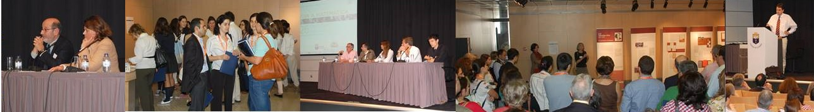

- 

CONFERÊNCIAS | EXPOSIÇÕES | DEMONSTRAÇÕES DE MATERIAL DIDÁTICO
O ENCONTRO | VIVA A MATEMÁTICA! É UM ESPAÇO PARA FALAR SOBRE MATEMÁTICA, COMPOSTO POR CONFERÊNCIAS, EXPOSIÇÕES E DEMONSTRAÇÕES DE MATERIAL. FOI IDEALIZADO E É ORGANIZADO PELO DEPARTAMENTO DE MATEMÁTICA DO COLÉGIO DE S. TOMÁS, EM LISBOA.
A 3ª EDIÇÃO DO ENCONTRO QUE TEM VINDO A GANHAR ESPAÇO NO DIÁLOGO DA MATEMÁTICA, TEM ESTE ANO UMA VEZ MAIS O APOIO DA SOCIEDADE PORTUGUESA DE MATEMÁTICA, ASSOCIAÇÃO DE PROFESSORES DE MATEMÁTICA, ASSOCIAÇÃO LUDUS E UNIVERSIDADE LUSÍADA.
ESTA INICIATIVA DO COLÉGIO DE S. TOMÁS CONTA AINDA, DESDE O INÍCIO, COM A CONFIANÇA DE PERSONALIDADES DE RELEVO NAS CIÊNCIAS. SÃO ELES O PROF. DOUTOR HENRIQUE LEITÃO, PRÉMIO PESSOA 2014 E O PROF. DOUTOR JORGE NUNO SILVA.
ESTE ANO O PROGRAMA PRETENDE MANTER, E ATÉ SUPERAR, O NÍVEL OFERECIDO ATÉ AGORA, COM NOVOS ORADORES, NOMES DE INTERESSE E ALGUMAS SURPRESAS.